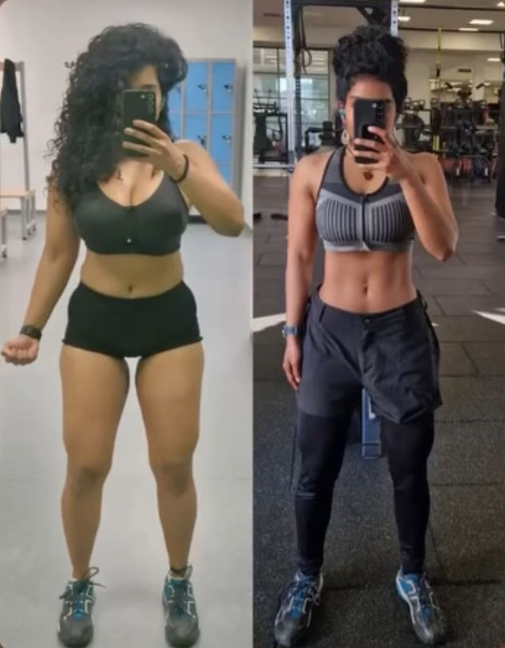
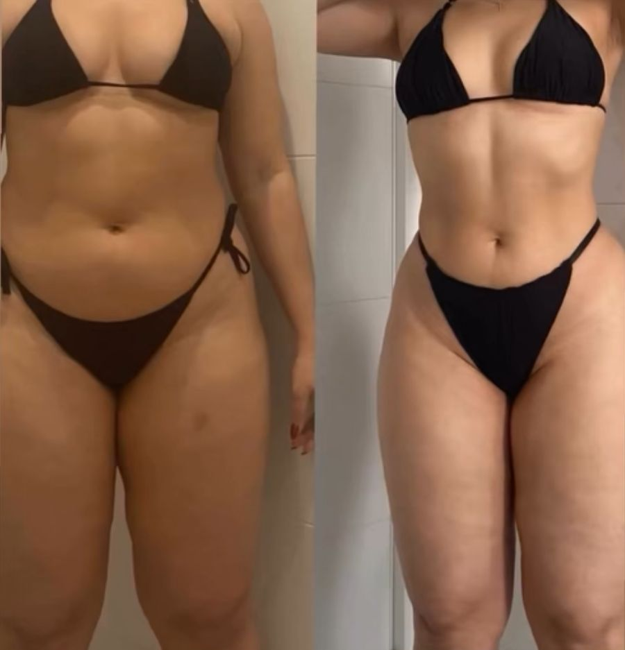

Base
Técnica, comer lo suficiente y hábitos. Tú: 4 sesiones con progresión, 3–4 comidas con proteína y tu revisión semanal.
Si llevas meses o años entrenando sin plan y no ves cambios —flaco que no gana o con algo de barriga— te ayudo a ganar músculo sin complicarte. Con 15 años pesaba 52 kg, medía casi 1,84 y me decían que no tenía hombros. Ahora esos mismos me preguntan cómo los entreno.
El formulario son 2 minutos. Lo leo yo y te digo por dónde empezaría en tu caso.
No es tu genética ni tu metabolismo. Te falta un plan simple y comer lo suficiente.
"Todos empezamos de alguna manera u otra."
En verano iba con sudadera y varias capas debajo para aparentar más cuerpo. Playa y piscina, ni de broma. Al gimnasio me daba vergüenza ir: creía que todos me miraban.
Mi primer año hacía full body de lunes a viernes, sin piernas ("con el fútbol era suficiente") y comía dos o tres veces al día. Veía casi imposible subir de peso. Un colega me lo dijo claro: "¿cómo puedes levantar tanto peso con ese cuerpo?".
Casi con 18 me fui a Londres. Me formé como entrenador, empecé a cocinar y a comer de verdad, y por primera vez trabajé por fases: volumen de 75 a 81 kg y después quitar grasa. Me veía mejor que nunca.
Luego vino la lesión de rodilla y la operación. Lo admito: la usé como excusa. Mientras tanto trabajaba más de 40 horas a la semana, estudiaba y entrenaba a las 00:30. El tiempo nunca fue el problema.
Hoy entreno a gente desde hace años y tres de mis clientes acabaron siendo entrenadores. Y los que decían que no tenía hombros me preguntan cómo los entreno.
"No hay atajos, eso es perder tiempo."
Seis meses con un orden claro. Lo primero que vas a dejar de hacer es complicarte la vida buscando la rutina perfecta.
Chicos de 18 a 25 que llevan meses o años entrenando sin plan, no ven cambios —flacos que no ganan o con algo de barriga— y quieren ganar músculo sin complicarse.
Qué pasa: Aprendes la técnica, empiezas a comer lo suficiente y el gimnasio deja de ser "otra vez".
Qué haces tú: 4 sesiones con progresión, 3–4 comidas con proteína y tu revisión semanal.
Qué pasa: Ganas músculo limpio —o haces recomposición si tienes algo de barriga— y se nota en la ropa y en el espejo.
Qué haces tú: Subes cargas cada semana y ajustas la comida a tu objetivo.
Qué pasa: Defines lo construido y aprendes a mantenerlo sin depender de nadie.
Qué haces tú: Ajustas comida y entreno y te quedas con tu propio sistema.
Prueba: "Con 15 años pesaba 52 kg, medía casi 1,84 y me decían que no tenía hombros. Ahora esos mismos me preguntan cómo los entreno."
Y tres de mis clientes acabaron siendo entrenadores.
Técnica, comer lo suficiente y hábitos. Tú: 4 sesiones con progresión, 3–4 comidas con proteína y tu revisión semanal.
Músculo limpio o recomposición si tienes algo de barriga. Tú: subes cargas cada semana y ajustas la comida a tu objetivo.
Defines lo construido y aprendes a mantenerlo. Tú: te quedas con tu propio sistema, sin depender de nadie.
Me mandas tu revisión, te corrijo la técnica por vídeo y ajusto el plan. Hablas directamente conmigo.
El plan se adapta al tiempo que tienes. Yo entrenaba a las 00:30 después de 12 horas de trabajo; tú no vas a tener que hacerlo, pero sí cumplir lo que acordemos.
No solo cambias el físico: aprendes a entrenar y a comer de verdad, para no volver a empezar "otra vez".
El método es el mismo: un plan simple, comer bien y constancia.


Me dijo que solo quería ser capaz de hacer una dominada.Una clienta · de mis historias de Resultados
2 minutos en el formulario: cuánto llevas entrenando, qué comes y qué quieres conseguir.
Si encajamos, te llamo y te digo por dónde empezaría contigo.
Tu fase 1 hecha para ti y la primera revisión en el calendario.
Lo leo yo personalmente. Si encajamos, te escribo para hablar.
Casi nunca. Yo hacía dos o tres comidas al día, una de cereales, y no subía. Primero comes lo suficiente; después hablamos de genética.
No necesitas 14 suplementos: necesitas comer. Si alguno tiene sentido en tu caso, te lo digo, pero no es lo primero.
Sí. En la fase de construir hacemos recomposición: ganar músculo mientras pierdes grasa.
Yo trabajaba más de 40 horas a la semana y estudiaba. No hace falta entrenar de lunes a viernes: el plan se adapta al tiempo que tienes.
A mí me pasaba: creía que todos me miraban. Entras con tu plan y los vídeos de técnica, sabiendo exactamente qué hacer. Todos empezamos de alguna manera.
Adaptamos el plan a tu punto de partida. Yo pasé por una operación de rodilla. Si la lesión es seria, primero tu fisio o tu médico.
En 6 meses vas a cambiar si cumples, pero no te prometo el cuerpo de otro. Te prometo un plan claro y que cada semana sabrás si avanzas.
Sí. El método es el mismo: plan simple, comer bien y constancia.
Depende de tu caso y de cuánto tiempo trabajemos juntos. Rellena el formulario y te lo explico cuando hablemos.
O escríbeme HAZLO por privado en @holyfield_fitness y te contesto yo.